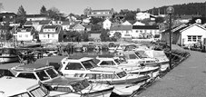

Oslofjordens sørlandsby hviler vennlig på solsiden, en halvtimes kjøretur fra Oslo. Freden råder, men du kan selv velge mellom solfylt døsighet og en mer aktiv tilværelse. Uansett flommer solen over små hager og hus med florlette gardiner og potteplanter. Her er det sommer hele året og jul året rundt. Du skal være passe sær for ikke å føle deg velkommen i Drøbak.Småbyen hvor "Den Dannede Galskap" florerer har plass til alle. Badeparken, den grønne lunge ved fjorden, ligger midt i byen med sine badestrender, gressletter, stupebrett, svaberg og krokete ruslestier. I sør byr Torkildstranda og Skiphelle på et rikt surfemiljø i tillegg til flere strender, svaberg og lune viker. Ikke mindre enn 60 km strandlinje ligger åpen for deg! Hva med en rusletur langs kystkulturstiensom går fra Follo museum via Seiersten Skanse til Veisving-batteriet, hvor du har flott utsikt over Oslofjorden.
Aktivitetsbyen
Mulighetene for aktiviteter er mange i Drøbak og Frogn. Her finnes tennisanlegg, ridesenter, 18 hulls golfbane og et nydelig turterreng. På Seiersten kan du se spennende fotbalkamper, mens Frognhallen er åpen for inneaktiviteter. Båtlivet florerer, både blant fastboende, hytteturister og andre tilreisende. På en varm sommerdag er det sydende aktivitet i Båthavna og i fjorden biter fisken villig.
Restaurantbyen
I Drøbak kan du velge mellom nesten 2.000 restaurantstoler - ute og inne - med miljøer og menyer for enhver smak. Et koselig hvitmalt hotell ligger midt i byen. Du får reker på bryggekanten i Båthavna, forfriskninger eller fast føde i en kaféhage - ofte akkompagnert av jazz eller trekkspilltoner.
Kulturbyen
Drøbak er et begrep, og de mange galleriene, Follo Museum og Drøbak Båtforenings Maritime Samlinger gir en unik bredde i tillegg til yrende musikk- og revyliv. Torget er gjerne en tumleplass for store og små - ja, her kan du også spille sjakk i bakgården ved biblioteket. Rusleturene i trange gater med gammel trehusbebyggelse setter en ekstra spiss på opplevelsene.
Handlebyen
Mulighetene for en handel i Drøbak er mange. Legg handleturen til det sjarmerende miljøet omkring Drøbak torg, eller besøk det store kjøpesenteret Drøbak City en drøy kilometer utenfor sentrum. I båthavna kan du handle ferske reker rett fra båt.